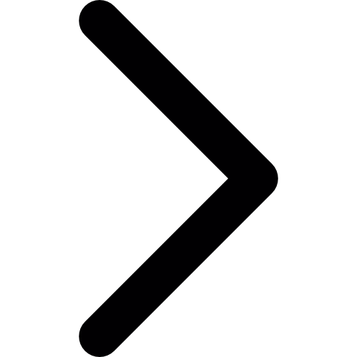

Soco mais poderoso do reino animal
Esse animal está sendo estudado para obras complexas como fuselagem de aviões, armadura militar e melhor sensibilidade das leituras de discos, um simples tamarutaca envolvido em projetos assim significa que há muitas surpresas por trás e aqui veremos a seguir algumas qualidades desse ser esplêndido.
O animal referido é a chamada lagosta boxeadora ou lacraias do mar, é uma tamarutaca (basicamente uma versão crustáceo do louva-deus), colorida, cuja a dieta é majoritariamente carnívora, gosta de viver em águas tropicais e sub-troicais, como também possui dois braços, cuja a força se equipara ao de um calibre 22 e também olhos precisos e capazes de enxergar o infravermelho e 16 tons de cores.
A lagosta possui esses braços devido a região hostil que se encontra e a ausência de presas para abocanhar as vítimas, porém no lugar recebeu esses braço, que são basicamente os mais fortes da natureza animal, pois a força de impacto consegue chegar a 80Km/h e com o ‘disparo’ (soltar os braços sobrecarregados), como se não basta-se tudo isso, eles causam o efeito do solo luminescência (pico de luz gerados pela forte colisão sonora), o quer dizer? Quer dizer o simples fato de que não apenas as presas, mas os outros ao redor virarão cozido devido ao impacto da lagosta em algum objeto.
Mas como o corpo consegue aguentar isso tudo? O casco da lagosta é composto por fibras minerais organizadas em várias camadas espiral (visão microscópica), o qual se encostam quando a lagosta dá o golpe, evitando quaisquer danos.
Mas e os olhos?
Como um predador, ele precisa encontrar suas presas, recebeu os melhores olhos possíveis para rastrear, como também para se defender, afinal existem muitas presas maiores que ele e com esses olhos, ele consegue ter tempo para revidar. ou fugir (o que quase nunca acontece), cada ser vivo possui nos olhos células fotorreceptoras chamadas de cones, um cão possui dois cones que enxergam o verde e o amarelo, uma borboleta tem 5, porém essa lagosta possui 16, podendo enxergar o infravermelho e cores que nunca enxergaremos na vida.